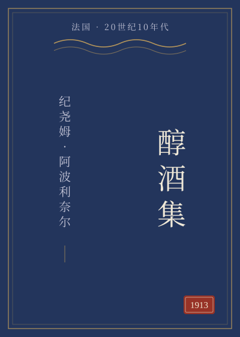
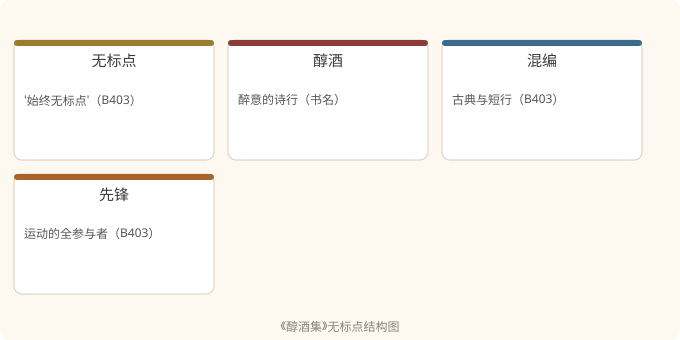

醇酒集
一、基本信息
| 作者 | 纪尧姆·阿波利奈尔 |
|---|---|
| 成书/出版 | 1913年（Britannica B403：Alcools (1913)——'his poetic masterpiece, always without punctuation'） Guillaume Apollinaire — Encyclopaedia Britannica（百科全书） |
| 国别/地区 | 法国 |
| 时代 | 近代 · 20世纪10年代 |
| 体裁 | 诗集 |
| 语言 | 法语 |

《醇酒集》无标点结构图（主题·结构图）
二、创作背景
Britannica（B403）：Alcools——'his poetic masterpiece, always without punctuation'（其诗歌杰作、始终无标点）——混亚历山大体/规则诗节/短无韵行。
Britannica（B403）：阿波利奈尔——'helped to direct poetry into unexplored channels'——'took part in all the avant-garde movements'。
Britannica（B403）：'Chanson du mal-aimé'——失恋英文女子所启（本集内名篇——B403 提及）。
三、内容脉络
（通说待核——B403未载篇目）'米拉波桥'等篇（篇目通说待核——B403未载）。
（通说待核）'无标点'的抒情流。
四、主要人物表
| 人物 | 身份 | 说明 |
|---|---|---|
| 抒情'我' | 现代歌者 | （B403 语境） |
五、主题与艺术特点
- '始终无标点'（B403：always without punctuation）。
- 古典格律与现代短行的混编（B403：alexandrines...short unrhymed lines）。
- '未探之诗路'（B403：unexplored channels）。
六、影响与评论
- Britannica：'his poetic masterpiece'（B403）。
Guillaume Apollinaire — Encyclopaedia Britannica（百科全书） - Britannica：'helped to direct poetry into unexplored channels'（B403）。
Guillaume Apollinaire — Encyclopaedia Britannica（百科全书）
七、阅读建议
难点
- 无标点的语流。
- 象征主义与立体派的交叉（B403 语境）。
- 《醇酒集》中译名（《烧酒集》）待核。
- 法文原版（公有领域状态待核）。
阿波利奈尔首选；后接《图像诗》。
八、待核实
- 篇目（《米拉波桥》——B403未载）核对（通说）。
- 1913年出版细节待核。
- 中译名两说待核。